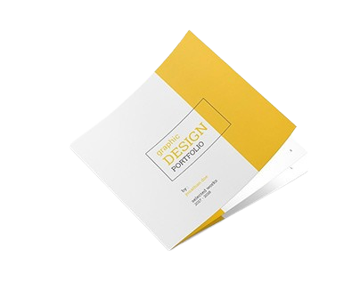

.jpg) PROJECTS :
PROJECTS :
ACADEMIC PROJECT
The simulation studies on power quality enhancement on grid connected multi-level inverter.
During this project i worked on the technique which was used to reduce the losses in power. In this Project we are having six types of PWM(Pulse Width Modulation) they are:
1.PD(Phase Disposition) 2.VFPD
3.POD(Phase Opposition and Disposition) 4.VFPOD
5.APOD(Alternate Phase and Disposition) 6.VFAPOD.
I worked on the technique known as APOD. APOD is nothing but a "ALTERNATE PHASE OPPOSITION and DISPOSITION". All the carrier waveforms have same frequency and same amplitude, but every carrier is phase shifted 180 degrees from its neighbour.
 MINI PROJECT :
I Developed a personal portfolio website to showcase My education, skills, and about me. This website is built using HTML, CSS. It is a responsive website.
Interactive navigation to highlight professional experience and project. Demonstrated skills in front-end development, resulting in improved online presence and visibility.
TECHNOLOGIES USED :-
-> HTML[Hyper Text Markup Language]
-> CSS[Cascading style sheets]